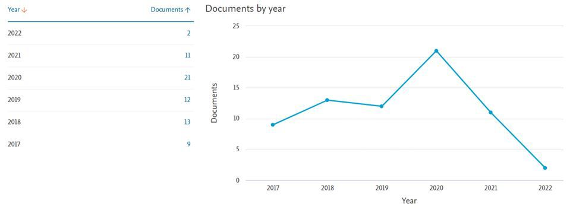
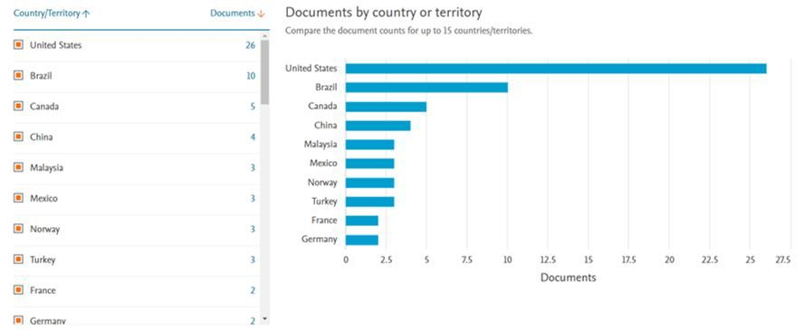
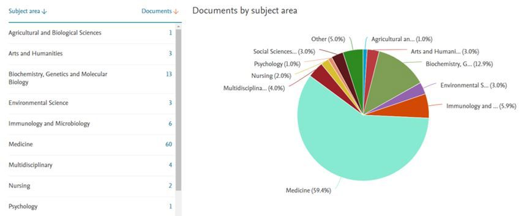
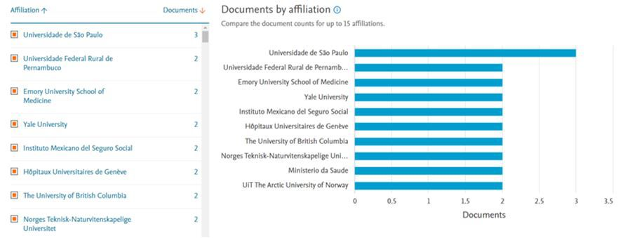
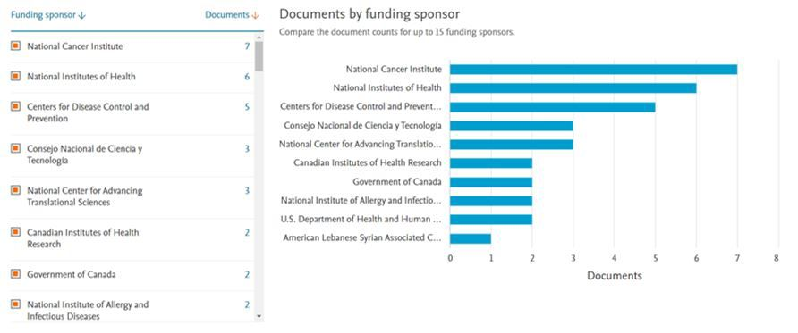
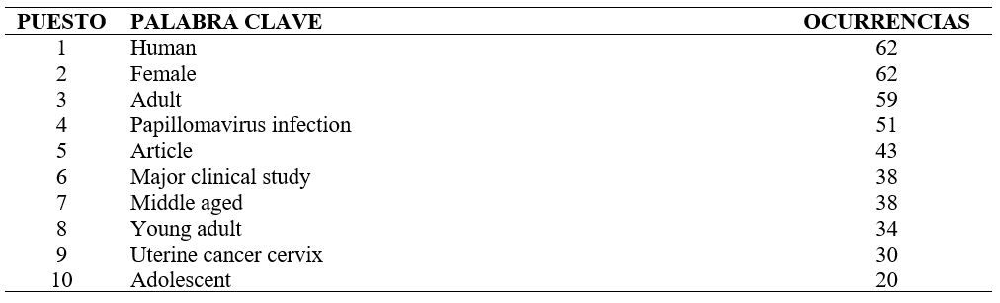
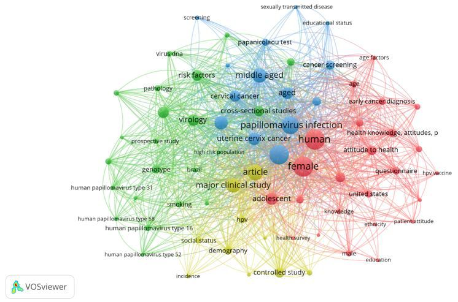

Introducción
El Cáncer de Cuello Uterino se ubica como una
de las principales causas de muerte en mujeres a
nivel mundial, la incidencia y mortalidad de esta
patología varían dependiendo de ciertos factores
sociodemográficos de la población, afectando
en su mayoría a mujeres cuyas condiciones
socioeconómicas, nivel educativo, estrato social,
estado de salud, etc. no son las mejores, aumentando
significativamente el riesgo de desarrollar Cáncer
Cervical. (Akkour, K., et. al.,2021; Osazuwa-Peters,
N., et. al., 2021; Hoque, M. R., et. al., 2021; Gauri,
A., et. al., 2020; Johnson, N. L., et. al., 2020)
Existen diferentes genotipos de HPV, clasificados en
dos grandes grupos: (i) HPV BR de bajo riesgo y (ii)
HPV AR de alto riesgo, los estudios de prevalencia
indican variación de genotipos en las distintas
naciones y zonas geográficas; por ello es importante
conocer e identificar los genotipos de HPV propios
en cada región y los factores sociodemográficos
asociados al desarrollo de Cáncer de Cuello Uterino
para analizar, encaminar y ajustar las políticas y
estrategias de las autoridades de salud para atender y
realizar promoción, educación y prevención de esta
enfermedad en cada grupo poblacional de estudio.
(Najioullah, F.,et. al.,2021; Molina-Pineda, A., et. al.,
2021; Chen, X., et.al., 2020; Shahi, Z., et. al., 2020;
Krings, A., et. al., 2019; Egli-Gany, D., et. al., 2019;
Magaji, S. J., et. al., 2019)
Actualmente en muchos países no se han logrado las
metas propuestas para reducir las cifras en relación al
cáncer de cuello uterino debido al desconocimiento
de los genotipos que prevalecen en la población y a
las deficiencias en educación y conocimiento de la
enfermedad y los factores asociados a su desarrollo.
(Benard, V. B., et. al., 2021)
Ante el vacío existente en cuanto a estudios realizados
en Colombia, específicamente en la zona fronteriza
con Venezuela, este análisis bibliométrico pretende
mostrar la importancia de conocer la prevalencia de
genotipos de HPV y los aspectos sociodemográficos
de la población, y de esta manera estimular e incentivar
la investigación científica al respecto.
La aplicación de la vacuna contra el HPV en
mujeres representa una herramienta importante en
la prevención de la enfermedad, pero es necesario conocer la prevalencia de genotipos en la población,
de esta manera podremos estimar la protección
real después de la vacunación, ello debido a que
la vacuna esta dirigida hacia ciertos genotipos de
HPV específicos. (Santos, A. C. D. S., et. al., 2020;
Russell, V. L., et. al., 2020; Kepka, D., et. al., 2019;
Egli-Gany, D., et. al., 2019)
Métodos
Selección de base de datos
La base de datos Scopus fue utilizada en este estudio
como herramienta de recuperación de los documentos
de mayor relevancia relacionados con la prevalencia
de genotipos de VPH y la correlación de los factores
sociodemográficos asociados al desarrollo de cancer
de cuello uterino en diferentes poblaciones a nivel
mundial.
La recolección de datos se obtuvo de Scopus el 20 de
abril de 2022 y comprendía información recopilada
de una búsqueda sistemática de publicaciones que
coincidían con los criterios de título del artículo,
resumen y palabras clave. Los tipos de documento
consultados fueron artículo y revisión, el intervalo
de tiempo de la búsqueda fue 2017 – 2022. Los
resultados de la búsqueda fue la siguiente:
Ecuación de búsqueda:
(TITLE-ABS-KEY (hpv) AND TITLE-ABS KEY
(cervical AND cancer) AND TITLE-ABS-KEY
(sociodemographic AND factors))
Intervalo de tiempo: 2017 – 2022; Se encontraron 68
artículos en la búsqueda
Exportación y análisis de datos:
Los datos recopilados de Scopus fueron (i)
información de citas y (ii) resumen y palabras
clave. La información recuperada fue exportada de
Scopus a Microsoft Excel. Para visualizar y analizar
los datos obtenidos en la búsqueda se utilizó el
software VOSviewer 1.6.18., el número mínimo de
ocurrencias de cada palabra clave en este análisis fue
de 5.
En este estudio fueron evaluados los siguientes
indicadores bibliométricos:
- Número y crecimiento anual de publicaciones relacionadas con genotipos de VPH y factores
sociodemográficos asociados al desarrollo de cancer
de cuello uterino.
- Países con mayor número de publicaciones
- Áreas temáticas relacionadas con genotipos de VPH
y factores sociodemográficos asociados al desarrollo
de cáncer de cuello uterino.
- Universidades con mayor número de publicaciones.
- Principales instituciones patrocinadoras y
financiadoras de estudios e investigaciones.
- Visualización de red de palabras clave de
coocurrencia.
Resultados
En total 68 documentos relacionados con genotipos
de VPH y factores sociodemográficos asociados
al desarrollo de cáncer de cuello uterino fueron
encontrados en la base de datos Scopus entre 2017
y el 20 de abril de 2022. En la figura 1 vemos el
comportamiento del número de publicaciones en esta
área. Se observa un pico en el año 2020 y un descenso
marcado en 2021 (Fig. 1)

Fig. 1 Evolución de estudios publicados por año entre 2017 y 2022.
Los países con mayor número de publicaciones son Estados Unidos, Brasil, Canadá y China principalmente.
(Fig. 2)

Fig. 2. Países con mayor contribución documental desde el año 2017
Las áreas temáticas relacionadas con genotipos
de VPH y factores sociodemográficos asociados
al desarrollo de cáncer de cuello uterino que
más realizan publicaciones son (i) Medicina (ii)
Bioquímica, Genética y Biología Molecular (iii)
Microbiología e Inmunología, y la gran mayoría se
publican en Medicina. (Fig. 3)

Fig. 3 Áreas temáticas con mayor numero de estudios publicados
Las universidades con mayor número de publicaciones son (i)Universidade de Sao Paulo, (ii)Universidade
Federal Rural de Pernambuco y (iii)Emory University School of Medicine. (Fig. 4)

Fig. 4 Universidades con mayor número de publicaciones relacionadas con genotipos de VPH y
factores sociodemográficos asociados al desarrollo de cáncer de cuello uterino.
La figura 5 muestra que el Instituto Nacional de Cáncer, el Instituto Nacional de Salud y los Centros de
Control y Prevención de Enfermedades, en los Estados Unidos son los mayores patrocinadores y financiadores
de investigaciones relacionadas con VPH y factores sociodemográficos asociados al desarrollo de cáncer de
cuello uterino.

Fig. 5 Principales patrocinadores y financiadores de estudios e investigaciones.
En la tabla I se muestra las 10 palabras clave más frecuentes en las publicaciones. Human es la palabra
clave
más frecuente, seguida de Female, Adult, Papillomavirus Infection y palabras relacionadas con los diversos
factores sociodemográficos asociados al cancer de cuello uterino.
Tabla I. Primeras 10 palabras clave encontradas con mayor frecuencia en los estudios publicados.

Al realizar el análisis de la red de coocurrencia de palabras clave, se identifican cuatro grupos bien
definidos,
rojo, verde, azul y amarillo; la figura 6 muestra el mapa relacionado con la coocurrencia entre las palabras
clave incluidas con mínimo 5 ocurrencias.

Fig. 6 Mapa de coocurrencia de palabras clave donde se aprecian cuatro grupos
Discusión
A nivel mundial los Estados Unidos y Brasil se
consolidan como las naciones que mas conocimiento
científico aportan sobre el Cancer de Cuello Uterino,
algunas instituciones especializadas en Cancer,
Salud Publica e investigación de enfermedades
infecciosas de los Estados Unidos, se consolidan
como los principales patrocinadores y financiadores
de investigaciones relacionadas con esta patología
que continúa siendo una de las que mas muertes
produce a nivel global. Así mismo, la universidad de
Sao Paulo en Brasil es el centro académico que mayor
numero de publicaciones científicas ha publicado en
los últimos años.
Gran variedad de publicaciones demuestra los
diversos factores sociodemográficos asociados al
riesgo de desarrollar cancer de cuello uterino, algunos
de ellos relacionados con el origen racial (Cofie LE,
et. al.,2022; Gauri, A., et. al., 2020; Johnson, N. L., et al., 2020; Boker, L. K. et. al.,2020; Biederman,
E., et.
al., 2020;), otros con grupos de mujeres de minorías
sexuales en especial estudios realizados a lesbianas
en Estados Unidos y China (Bustamante, G., et.
al.,2021; Chen, X., et. al.,2020), también estudios
relacionados al lugar de residencia, rural o urbana,
nivel de estudios, ingresos económicos y estrato
social de las participantes, en los cuales las mujeres
con un menor nivel socioeconómico y educativo y
aquellas que residen en áreas rurales presentan una
mayor prevalencia de HPV y tienen mayor riesgo
de desarrollar cancer cervical (Locklar, L. R., et.
al., 2021; Alam, Z., et. al.,2022; Benard, V. B., et.
al.,2021; Hoque, M. R., et. al.,2021; Tuncer, H. A., et.
al.,2019; Sainei, N. E., et. al., 2018) de igual manera
se observa que factores como la asociación con otras
enfermedades, conductas sexuales de las mujeres
y sus parejas, edad, estado civil, enfermedades de
transmisión sexual y otros, aumentan la vulnerabilidad
y el riesgo de padecer esta enfermedad (OsazuwaPeters, N., et. al.,2021; Buss, L. F., et. al.,2021;
Molina-Pineda, A., et. al.,2020; Zhou, Y. X., et.
al.,2020; Wells, J. S., et. al.,2020; Guilarte-García, E.,
et. al.,2020; Krings, A., et. al.,2019; Schettino, M. T.,
et. al., 2019; Kasamatsu, E., et. al., 2019; Buechel, J.
J.,et. al., 2018)
Existen diferencias entre la prevalencia de genotipos
de alto y bajo riesgo de VPH en las distintas zonas
geográficas como México, el caribe, Martinica,
Irán, Cuba, Holanda, Ghana, Brasil, Suiza, Italia,
Turquía, Nigeria, Malasia y Paraguay, donde se han
realizado este tipo de estudios (Najioullah, F., et. al.,
2021; Molina-Pineda, A., et. al., 2020; Chen, X., et.
al., 2020; Shahi, Z., et. al., 2020; Guilarte-García,
E., et.al., 2020; van der Waal, D., et. al., 2020; van
der Waal, D., et.al., 2019; Krings, A., et. al., 2019;
Egli-Gany, D., et. al., 2019; Schettino, M. T., et. al.,
2019; Magaji, S. J., et. al., 2019; Kasamatsu, E., et.
al., 2019; Sainei, N. E., et. al., 2018)
La implementación de la vacunación y la aceptación
por parte de las mujeres y la sociedad en general
para participar en los programas de inmunización y
educación, centran la atención de los investigadores
para el desarrollo de nuevos estudios e investigaciones
(Akkour, K., et. al., 2021; Ebu, N. I., et. al., 2021;
Al Sekri, E., et. al., 2021; Molina-Pineda, A., et. al.,
2021; Hardin, R. N., et. al., 2021; Santos, A. C. D. S.,
et. al., 2020; Russell, V. L., et. al., 2020; Kepka, D.,
et. al., 2019; Egli-Gany, D., et. al., 2019; Buechel, J.
J., et. al., 2018).
Recientemente se ha estudiado la asociación del
microbiota vaginal como un factor de riesgo para la
infección por HPV (Nieves-Ramírez, M. E., et. al.,
2021)
Conclusiones
Gracias a este análisis realizado, podemos observar la
gran variedad y las diferencias que existen entre los
hallazgos encontrados en los estudios desarrollados
en diferentes países de la geografía mundial.
El aporte realizado por algunas naciones, universidades,
instituciones de salud e investigadores, se debe
fortalecer y vincular a mas actores para fomentar
la investigación y publicación de conocimiento
científico que nos ayude a conocer más sobre el HPV,
el Cancer de cuello Uterino y los factores asociados
a su desarrollo.
Estos estudios son necesarios para poder conocer las
características propias de la población, identificar los
factores de riesgo, determinar la prevalencia de los
genotipos de HPV y de esta manera realizar ajustes
y mejoras en las políticas y estrategias encaminadas
a prevenir y enfrentar esta enfermedad que continúa
siendo una de las principales causas de muerte en
mujeres a nivel mundial.
Actualmente existe un vacío alrededor de este tema
en nuestra región, lo cual nos motiva para realizar
investigación y contribuir a la generación de
conocimiento.
En estudios posteriores se deben abarcar otras
palabras clave y diferentes ecuaciones de búsqueda
y así encontrar otras publicaciones que seguramente
no fue posible abarcar en este estudio.
Referencias
- Akkour, K., Alghuson, L., Benabdelkamel, H.,
Alhalal, H., Alayed, N., AlQarni, A., & Arafah,
M. (2021). Cervical Cancer and Human
Papillomavirus Awareness among Women in
Saudi Arabia. Medicina, 57(12), 1373.
- Al Sekri, E., Al Musalhi, A., Al Abri, K., Al Kindi,
H., & Al Salmani, A. A. (2021). Prevalence of
Cytological Abnormalities in Papanicolaou
Smears and Risk Factors for Cervical Cancer
Among Women in Muscat, Oman. Sultan Qaboos
University Medical Journal, 21(4), 598.
- Alam, Z., Dean, J., & Janda, M. (2022). What do
South Asian immigrant women know about HPV,
cervical cancer and its early detection: A crosssectional Australian study. Journal of Migration
and Health, 100102.
- Benard, V. B., Jackson, J. E., Greek, A., Senkomago,
V., Huh, W. K., Thomas, C. C., & Richardson, L.
C. (2021). A population study of screening history
and diagnostic outcomes of women with invasive
cervical cancer. Cancer Medicine, 10(12), 4127-
4137.
- Biederman, E., Champion, V., & Zimet, G. (2020).
A conjoint analysis study on self-sampling
for human papillomavirus (HPV) testing
characteristics among black women in Indiana. BMC women’s health, 20(1), 1-8.
- Boker, L. K., Twig, G., Klaitman-Meir, V., Derazne,
E., Shina, A., Levine, H., & Kark, J. D. (2020).
Adolescent characteristics and incidence of premalignant disease and invasive tumors of the
cervix. International Journal of Gynecologic
Cancer, 30(7).
- Buechel, J. J., & Connelly, C. D. (2018). Determinants
of human papillomavirus vaccination among US
Navy personnel. Nursing Research, 67(4), 341-
346.
- Buss, L. F., Levi, J. E., Longatto‐Filho, A., Cohen,
D. D., Cury, L., Martins, T. R., ... & Eluf‐Neto,
J. (2021). Attendance for diagnostic colposcopy
among high‐risk human papillomavirus
positive women in a Brazilian feasibility
study. International Journal of Gynecology &
Obstetrics, 152(1), 72-77.
- Bustamante, G., Reiter, P. L., & McRee, A. L. (2021).
Cervical cancer screening among sexual minority
women: findings from a national survey. Cancer
Causes & Control, 32(8), 911-917.
- Chen, X., Yan, H., Cao, Y., Li, S., Yang, N., & Li,
X. (2020). Epidemiological investigation on the
cervical health of lesbians in Beijing, China.
Journal of International Medical Research,
48(2), 0300060519889754.
- Cofie LE, Tailor HD, Lee MH, Xu L. HPV vaccination
uptake among foreign-born Blacks in the US:
insights from the National Health Interview
Survey 2013-2017.Cancer Causes Control. 2022
Apr;33(4):583-591. doi: 10.1007/s10552-021-
01550-x.Epub 2022 Jan 16. PMID: 35034260.
- Ebu, N. I., Abotsi-Foli, G. E., & Gakpo, D. F. (2021).
Nurses’ and midwives’ knowledge, attitudes, and
acceptance regarding human papillomavirus
vaccination in Ghana: a cross-sectional study.
BMC nursing, 20(1), 1-10.
- Egli-Gany, D., Spaar Zographos, A., Diebold, J.,
Masserey Spicher, V., Frey Tirri, B., Heusser,
R., ... & Low, N. (2019). Human papillomavirus
genotype distribution and socio-behavioural
characteristics in women with cervical pre-cancer and cancer at the start of a human papillomavirus
vaccination programme: the CIN3+ plus study.
BMC cancer, 19(1), 1-11.
- Gauri, A., Messiah, S. E., Bouzoubaa, L. A., Moore,
K. J., & Koru-Sengul, T. (2020). Cervical cancer
sociodemographic and diagnostic disparities in
Florida: a population-based study (1981–2013) by
stage at presentation. Ethnicity & health, 25(7),
995-1003.
- Gizaw, M., Teka, B., Ruddies, F., Kassahun, K.,
Worku, D., Worku, A., ... & Kantelhardt, E. J.
(2020). Reasons for not attending cervical cancer
screening and associated factors in Rural Ethiopia.
Cancer Prevention Research, 13(7), 593-600
- Guilarte-García, E., Soto-Brito, Y., Kourí-Cardellá, V.,
Limia-León, C. M., de Lourdes Sánchez-Alvarez,
M., Rodríguez-Díaz, A. E., ... & Baños-Morales,
Y. (2020). Circulation of Human Papillomavirus
and Chlamydia trachomatis in Cuban Women.
MEDICC review, 22(1).
- Hardin, R. N., Russell, K. M., Flynn, J. S., Gammel, H.
L., Eddinger, J. R., Schenck, L. A. M., & Klosky,
J. L. (2020). Factors Associated with Intention of
Human Papillomavirus (HPV) Vaccine Initiation
Among Females With and Without a History of
Childhood Cancer. Journal of clinical psychology
in medical settings, 27(4), 716-726.
- Heráclio, S. A., de Souza, A. S., Silveira, R. K.,
Torres, L. C., Nunes, M. J., & Amorim, M. M.
(2019). Anal prevalence of HPV in women with
pre‐malignant lesion or cancer in the cervix
and anal canal simultaneously: cross‐sectional
study. International Journal of Gynecology &
Obstetrics, 147(2), 225-232.
- Hoque, M. R., Haque, E., & Karim, M. R. (2021).
Cervical cancer in low‐income countries: A
Bangladeshi perspective. International Journal of
Gynecology & Obstetrics, 152(1), 19-25.
- Johnson, N. L., Head, K. J., Scott, S. F., & Zimet,
G. D. (2020). Persistent disparities in cervical
cancer screening uptake: knowledge and
sociodemographic determinants of Papanicolaou
and human papillomavirus testing among women
in the United States. Public Health Reports, 135(4), 483-491.
- Kasamatsu, E., Rodríguez Riveros, M. I., Soilan,
A. M., Ortega, M., Mongelós, P., Páez, M., ...
& ESTAMPA Paraguay Center study group.
(2019). Factors associated with high-risk human
papillomavirus infection and high-grade cervical
neoplasia: a population-based study in Paraguay.
PloS one, 14(6), e0218016.
- Kepka, D., Rutkoski, H., Pappas, L., Tay, D. L.,
Winkler, J. R., Dixon, B., ... & Pinzon, L. M.
(2019). US oral health students’ willingness to
train and administer the HPV vaccine in dental
practices. Preventive medicine reports, 15,
100957.
- Krings, A., Dunyo, P., Pesic, A., Tetteh, S., Hansen,
B., Gedzah, I., ... & Kaufmann, A. M. (2019).
Characterization of Human Papillomavirus
prevalence and risk factors to guide cervical
cancer screening in the North Tongu District,
Ghana. PLoS One, 14(6), e0218762.
- Locklar, L. R., & Do, D. P. (2021). Rural‐urban
differences in HPV testing for cervical cancer
screening. The Journal of Rural Health.
- Magaji, S. J., Aminu, M., Inabo, H. I., & Oguntayo,
A. O. (2019). Spectrum of high risk human
papillomavirus types in women in Kaduna State,
Nigeria. Annals of African medicine, 18(1), 30.
- Molina-Pineda, A., López-Cardona, M. G., LimónToledo, L. P., Cantón-Romero, J. C.,
MartínezSilva, M. G., Ramos-Sánchez, H. V., ... & AguilarLemarroy, A. (2020). High frequency of HPV
genotypes 59, 66, 52, 51, 39 and 56 in women
from Western Mexico. BMC Infectious Diseases,
20(1), 1-10.
- Najioullah, F., Dorival, M. J., Joachim, C., Dispagne,
C., Macni, J., Abel, S., ... & DEPIPAPUFR study
group. (2021). Genotype distribution of cervical
HPV among Caribbean women in a populationbased study in Martinique: The DEPIPAPUFR
study. Plos one, 16(10), e0257915.
- Nieves-Ramírez, M. E., Partida-Rodríguez, O.,
Moran, P., Serrano-Vázquez, A., Pérez-Juárez, H.,
Pérez-Rodríguez, M. E., ... & Finlay, B. B. (2021). Cervical Squamous Intraepithelial Lesions
Are Associated with Differences in the Vaginal
Microbiota of Mexican Women. Microbiology
Spectrum, 9(2), e00143-21.
- Osazuwa-Peters, N., Simpson, M. C., Rohde, R. L.,
Challapalli, S. D., Massa, S. T., & Adjei Boakye,
E. (2021). Differences in Sociodemographic
Correlates of Human Papillomavirus-Associated
Cancer Survival in the United States. Cancer
Control, 28, 10732748211041894.
- Russell, V. L., Ogilvie, G., Beksinska, M., Nyrenda,
M., Mitchell-Foster, S., Lavoie, J., ... & AYAZAZI
Research Team. (2020). Human papillomavirus
and cervical cancer risk perception and vaccine
acceptability among adolescent girls and young
women in Durban, South Africa. South African
Medical Journal, 110(9), 887-893.
- Sainei, N. E., Kumar, V. S., Chin, Y. S., & Salih,
F. A. (2018). High prevalence of human
papillomavirus types 56 and 70 identified in the
native populations of Sabah, Malaysia. Asian
Pacific Journal of Cancer Prevention: APJCP,
19(10), 2807.
- Santos, A. C. D. S., Silva, N. N. T., Carneiro, C.
M., Coura-Vital, W., & Lima, A. A. (2020).
Knowledge about cervical cancer and HPV
immunization dropout rate among Brazilian
adolescent girls and their guardians. BMC public
health, 20(1), 1-11.
- Schettino, M. T., De Franciscis, P., Schiattarella,
A., La Manna, V., Della Gala, A., Caprio, F., ...
& Yenigün, E. H. (2019). Prevalence of HPV
Genotypes in South Europe: Comparisons
between an Italian and a Turkish Unvaccinated
Population. Journal of Environmental and Public
Health, 2019.
- Shahi, Z., & Edalatmanesh, M. A. (2020). Molecular
Detection of Human Papilloma Virus (Type 16,
18) Using PCR and Its Frequency in Patients
with Cervical Cancer in Iranian Women. Journal
of Obstetrics, Gynecology and Cancer Research
(JOGCR), 5(3), 110-114.
- Tuncer, H. A., & Tuncer, S. F. (2019). Women’s
knowledge, awareness and attitudes toward newly implemented national HPV-based screening in
Turkey. Journal of Cancer Policy, 22, 100205.
- Van der Waal, D., Bekkers, R. L., Dick, S., Lenselink,
C. H., Massuger, L. F., Melchers, W. J., ... &
Broeders, M. J. (2020). Risk prediction of cervical
abnormalities: The value of sociodemographic
and lifestyle factors in addition to HPV status.
Preventive Medicine, 130, 105927.
- Wells, J. S., Flowers, L., Paul, S., Nguyen, M. L.,
Sharma, A., & Holstad, M. (2020). Knowledge
of anal cancer, anal cancer screening, and HPV in
HIV-positive and high-risk HIV-negative women.
Journal of Cancer Education, 35(3), 606-615.
- Zhou, Y. X., Zhu, F. F., Chen, C., Zhang, Y. X., Lv,
X. L., Li, J. W., ... & Gao, J. (2020). Association
of thiamine intake with human papillomavirus
(HPV) infection in American women: a secondary
data analysis based on the National Health and
Nutrition Examination Survey from 2003 to
2016. Medical Science Monitor: International
Medical Journal of Experimental and Clinical
Research, 26, e924932-1.

 Maestría En Ciencias Biológicas
Revisión Bibliométrica, Universidad Francisco de Paula Santander, Cúcuta, Colombia
Maestría En Ciencias Biológicas
Revisión Bibliométrica, Universidad Francisco de Paula Santander, Cúcuta, Colombia